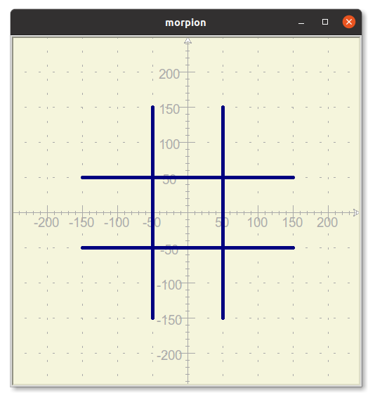
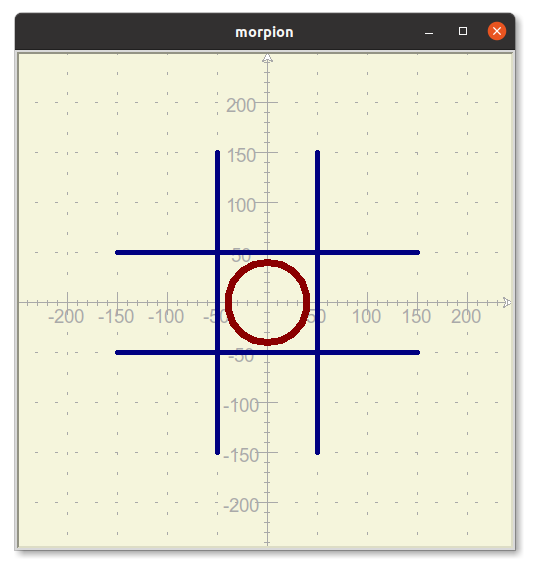
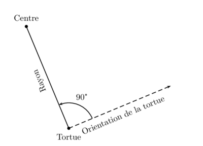
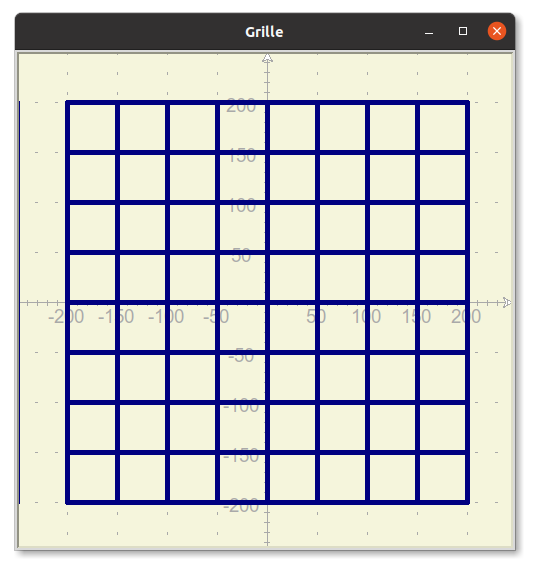
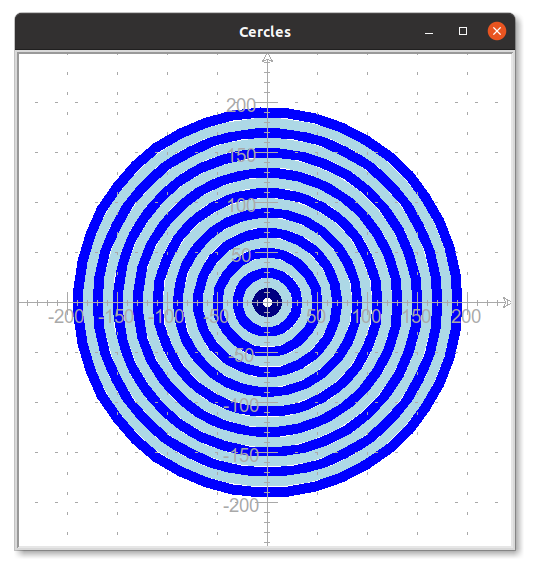
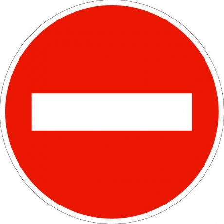
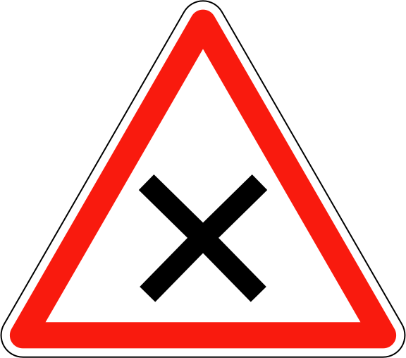
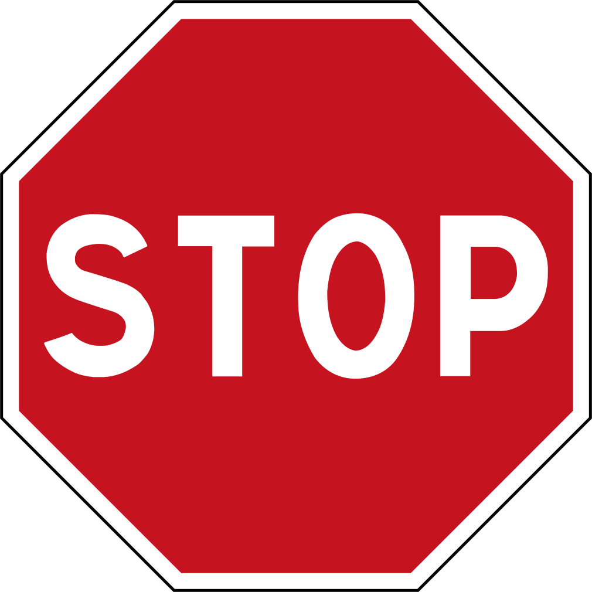
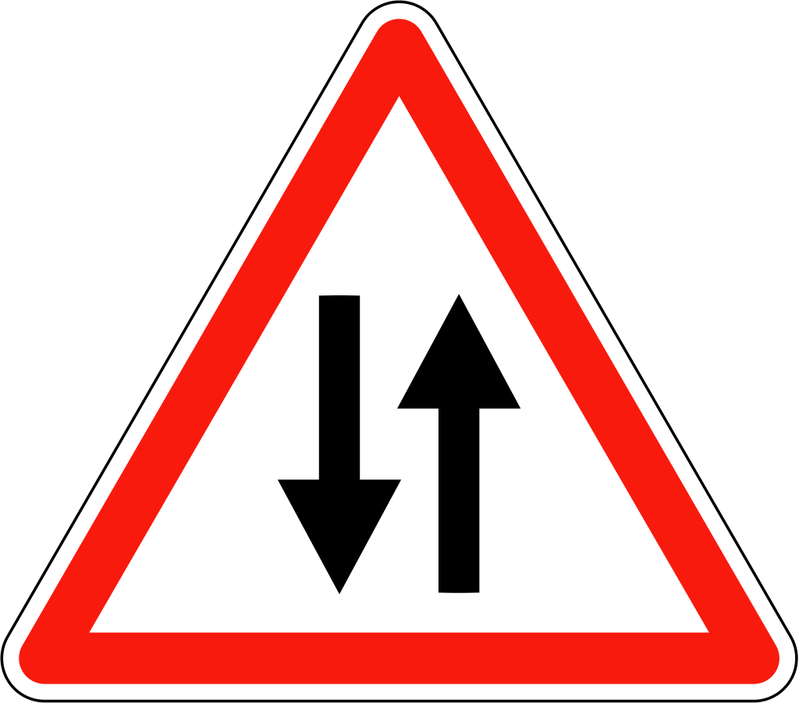

C0 Révisions
Activités
 Activité 1 : Ligne de commande
Activité 1 : Ligne de commande
Le but de cette activité est de redécouvrir les bases de la ligne de commande. On utilisera gameshell, un mini-jeu d'aventure où les commandes servent à accomplir des missions.
-
Installation de Gameshell :
- Télécharger le fichier gameshell.
- Ouvrir l'explorateur de fichier.
- Créer un répertoire
gameshelldans votre dossier personnel (en faisant un clic-droit et en sélectionnant nouveau dossier) - Dans ce répertoire, copier le fichier gameshell que vous avez téléchargé.
- Faire un clic droit sur le fichier et dans l'onglet permission cocher la case 'Autoriser l'exécution du fichier comme un programme', comme illustré ci-dessous :

- Faire un clic droit dans la fenêtre de l'explorateur de fichier et sélectionner "ouvrir dans un terminal" comme illustré ci-dessous :

- Dans le terminal taper :
./gameshell.sh
-
Parallèlement à l'exécution des missions :
- Noter les commandes que vous utilisez et leur signification
- Tenir à jour un plan du monde dans lequel se déroule le jeu
Aide
Pour la première mission, vous devez donc noter le sens des commandes
cd,lsetpwdet commencer le schéma suivant qui sera à poursuivre tout au long des missions :graph TD A[Monde] --> B[Chateau] A --> C[Echoppe] A --> D[Forêt] A --> E[Jardin] A --> F[Montagne] -
L'installation de Gameshell, faite ci-dessus à l'aide de l'interface graphique aurait pu être réalisé en ligne de commande.
- Quelle commande permet de créer un répertoire
gameshelldans votre dossier personnel (question 1.c ci-dessus) ? - Quelle commande correspond à la copie du fichier (question 1.d ci-dessus) ?
- Quelle commande correspond à la modification des droits d'exécution (question 1.e ci-dessus) ?
- Quelle commande permet de créer un répertoire
Activité 2 : Module turtle de Python
Le but de cette activité est de redécouvrir les bases de la programmation en python en utilisant le module turtle qui permet de dessiner à l'aide d'une "tortue" (équivalente à un crayon) à laquelle on donne des instructions (se déplacer, avancer, tourner, ...) de façon à former le dessin désiré. Cette tortue se déplace sur un écran (équivalent au papier), doté d'un repère comme en mathématiques.
-
Dessiner une grille de morpion
On souhaite dessiner une grille du jeu de morpion comme ci-dessous (où le repère du papier est tracé de façon à connaître les dimensions et positions des traits) : -
Recopier et executer le programme suivant :
import turtle # Création du "papier" et du "crayon" crayon = turtle.Turtle() papier = turtle.Screen() # Taille, dimension et couleur pour le papier et le crayon papier.bgcolor("beige") papier.setup(width=500,height=500) crayon.color("navy") crayon.pensize(5) # Tracé d'un trait avec les coordonnées des extrémités crayon.penup() crayon.goto(-50,-150) crayon.pendown() crayon.goto(-50,150) # Tracé d'un trait en orientant et en faisant avancer la tortue crayon.penup() crayon.goto(50,-150) crayon.pendown() crayon.setheading(90) crayon.forward(300) # Attends un clic pour fermer la fenêtre de dessin papier.exitonclick() -
Expliquer le rôle des instructions suivantes :
pensizeetcolorpenupetpendowngotoetforwardsetheading
Aide
Vous pouvez modifier les paramètres ou supprimer certaines instructions pour en voir l'effet sur le dessin. Aider vous aussi des commentaires.
-
Compléter ce programme en traçant les deux traits horizontaux manquants afin de compléter le dessin de la grille de morpion.
-
-
Dessiner un cercle au centre de la grille de morpion (de rayon 40, de couleur
darkredavec un crayon d'épaisseur 7) de façon à obtenir le dessin final suivant : Aide
Utiliser
circle(r)oùrest le rayon du cercle à tracer, on fera attention que le centre du cercle se situe toujours à gauche de l'orientation de la tortue et à une distancercomme représenté ci-dessous : 
Activité 3 : De l'utilité des fonctions
Attention
Cette activité est la suite de la précédente, on doit donc déjà disposer d'un programme Python permettant de tracer la grille de morpion ainsi que le cercle central. Même si vous pouvez télécharger ce programme ici, il est fortement conseillé d'avoir assimilé les notions de l'activité précédente (tracé des lignes et des cercles) avant de continuer.
-
On propose d'écrire une fonction
lignepermettant de tracer avec la tortuecrayonun trait en donnant les coordonnéesx1ety1de l'origine etx2ety2de l'extrémité.- Par quel mot clé commence la définition d'une fonction en Python ?
- Quels seront ici les arguments de la fonction ?
- Recopier et compléter le code de cette fonction :
... ligne(..,..,..,..): crayon....() crayon....(..,..) crayon.....() crayon.....(..,..)- Ajouter une chaîne de documentation à cette fonction
- Faire le tracé de la grille de morpion en vous aidant de cette fonction.
- Que peut-on dire par rapport à version du programme qui n'utilisait pas de fonction ?
-
En vous inspirant de l'exemple précédent, écrire une fonction
ligne2permettant de tracer un trait en donnant les coordonnéesxetyde son origine, ainsi que sa longueurlet sa directiond(sous la forme d'un angle).Aide
On utilisera
forwardpour avancer de la longueur indiquée etsetheadingpour positionner la tortue avec l'orientation désirée. -
Ecrire une fonction
cerclepermettant de tracer un cercle dont on donne les coordonnées du centrexetyet le rayonr -
Ecrire une fonction
croixqui permet de tracer une croix () en donnant son centre et la longueur des branches.
Activité 4 : Une boucle pour répéter
On souhaite dessiner la grille suivante à l'aide du module turtle de Python :

On dispose déjà d'un début de programme qui définit les propriétés du papier et du crayon ainsi que la fonction ligne permettant de tracer une ligne en donnant les deux extrémités (voir activités précédentes) :
import turtle
# Création du "papier" et du "crayon"
crayon = turtle.Turtle()
papier = turtle.Screen()
# Taille, dimension et couleur pour le papier et le crayon
papier.bgcolor("beige")
papier.setup(width=500,height=500)
crayon.color("navy")
crayon.pensize(5)
def ligne(x1,y1,x2,y2):
crayon.penup()
crayon.goto(x1,y1)
crayon.pendown()
crayon.goto(x2,y2)
- Écrire les instructions permettant de tracer les lignes horizontales.
- Une (bien) meilleure solution
- Vérifier que les instructions suivantes permettent de tracer les lignes verticales :
for abscisse in range(-200,250,50): ligne(abscisse,-200,abscisse,200) - Quelles sont les valeurs prises successives prises par la variable
abscissedans le programme précédant ? - Rappeler le rôle des paramètres de
range
- Vérifier que les instructions suivantes permettent de tracer les lignes verticales :
Activité 5 : Instructions conditionnelles
On souhaite dessiner la figure suivante à l'aide du module turtle de Python :

- Ecrire une fonction
carre(x,y,c)qui trace le carré de côtécdont le coin inférieur gauche a pour coordonnées(x,y). - Ecrire une boucle à l'aide d'une instruction
for ... in range(....):de façon à tracer la suite de carré bleu. -
Ajouter une instruction conditionnelle dans la boucle de façon à ce que le septième carré soit tracé en rouge et avec un crayon plus épais comme sur la figure.
Rappel
On rappelle que la syntaxe d'une instruction conditionnelle est :
if <condition>: <instructions1> else: <instructions2>
Activité 6 : Le problème de Josephus
Le but de l'activité est d'écrire un programme permettant de résoudre le problème de Joséphus en révisant les listes de Python.
- On représente un cercle de
nsoldats par la liste[1,2,...,n]- Ecrire une fonction
soldats(n)qui renvoie la liste[1,2,....,n] - Verifier que
nest bien un entier strictement positif à l'aide d'instructionassert - Ajouter une chaîne documentation.
- Ecrire une fonction
-
Afin de repérer l'épée, on décide que le soldat qui la tient se situe toujours en première position de la liste.
-
Compléter l'évolution de la liste de soldat ci-dessous
Etat de la liste Explications [1, 2,3,4,5,6]1élimine2et passe l'épée à3qui passe donc en tête de liste[3,...,5,6,1] 3élimine...et passe l'épée à...qui passe donc en tête de liste[..., 6,1,3]...élimine...et passe l'épée à...qui passe donc en tête de liste[...,...,...] ..... [...,...] ..... [...] ..... -
Compléter l'algorithme suivant d'évolution de la liste et indiquer les instructions Python correspondantes (on désigne par
cerclela liste représentant le cercle de soldats):Etapes Opération sur la liste Instructions Python 
.......... tueur=cercle.pop(0)
Ajouter cet élément en fin de liste ...... 
Supprimer le premier élément ...... -
Quel est la condition d'arrêt de l'algorithme ?
- Exprimer cette condition par un test en python sur
cercle
-
-
Programmer une fonction
josephus(n)qui renvoie le soldat survivant pour un cercle densoldats.
Cours
Vous pouvez télécharger une copie au format pdf du diaporama de synthèse de cours présenté en classe :
Attention
Ce diaporama ne vous donne que quelques points de repères lors de vos révisions. Il devrait être complété par la relecture attentive de vos propres notes de cours et par une révision approfondie des exercices.
Exercices
Exercice 1 : Les bases de la ligne de commande
- En utilisant uniquement la ligne de commande, créer l'arborescence suivante dans votre répertoire personnel :
graph TD A[Cours] --> B[C0-Révisions] A[Cours] --> G[C1-Récursivité] B --> C[Exercices] B --> D[Activités] B --> E[Notes] B --> F[Python]
- Renommer le dossier
CoursenNSI - Créer un fichier vide
exercice2.txtdans le dossierExercices
Exercice 2 : Quelques commandes
-
Sans les tester, écrire dans le fichier
exercice2.txtcrée à l'exercice précédent l'effet des commandes suivantes :cd ~mkdir Partagechmod a+rwx Partagecd Partagetouch hello.txtecho "Salut tout le monde" > hello.txtcat hello.txt
-
Taper ces commandes pour vérifier vos précisions.
Exercice 3 : Arborescence
- Rechercher l'aide de la commande
tree, quel est l'effet de cette commande ? - Afficher l'arborescence de votre répertoire personnel
- Afficher l'arborescence de la racine en limitant à un la profondeur
- Rechercher sur le Web le rôle des dossiers suivants :
/etc/home/dev/tmp
Aide
Pour les exercices avec turtle, on peut consulter la page de documentation officielle du module
Exercice 4 : Figures géométriques avec Turtle
- Ecrire une fonction
rectangle(x,y,l1,l2)qui trace le rectangle de dimensionsl1\(\times\)l2et dont le coin inférieur gauche à pour coordonnéesxety. -
On peut remplir une surface construite avec un
crayondu moduleturtle:- Spécifier une couleur de remplissage par exemple
crayon.fillcolor(red) - Au début du tracé de la figure écrire l'instruction
crayon.begin_fill() - A la fin du tracé de la figure écrire l'instruction
crayon.end_fill()
Modifier votre fonction rectangle de façon à pouvoir tracer un rectangle rempli avec une couleur passée en paramètre.
- Spécifier une couleur de remplissage par exemple
Exercice 5 : Quelques figures avec turtle
Construire les figures suivantes (le repère est là pour vous aider et ne dois pas être reproduit):
- L'escalier

- Cercles concentriques (les couleurs alternent entre
blueetlightblue, le crayon a une épaisseur de 10, les cercles ont pour rayon 10,20,30, ...) 
Exercice 6 : Pour réviser les listes
-
On considère le programme suivant :
liste1 = [0]*100 liste2 = [0 for k in range(100)] liste3 = [] for k in range(100): liste3.append(0)- Quel est le contenu de chacune des listes ?
- Indiquer par quel procédé chacune de ces listes a été crée.
-
Ecrire un programme python permettant de créer les listes suivantes :
- Une liste contenant 12 fois le chiffre 7.
- La liste des nombres entiers de 1 à 100.
-
Une liste contenant 1000 nombres tirés au sort entre 1 et 6. \
Aide
On rappelle que la fonction
randintpeut être importée depuis le modulerandom, elle permet de tirer un nombre au hasard entre deux valeursaetbdonnés en paramètres. -
La liste des cubes des entiers de 1 à 10.
Exercice 7 : Parcours de liste
- Ecrire une fonction
somme(l)qui renvoie la somme des éléments de la listel. Vérifier que tous les éléments delsont biens des nombres entiers (int) ou flottants (float). -
Ecrire une fonction
indice(elt,l)qui renvoie l'indice de la première apparition deeltsieltest danslet \(-1\) sinon.Exemples
indice(3,[1,2,3,5,7,11])renvoie2puisque3est dans cette liste à l'indice 2.indice(13,[1,2,3,5,7,11])renvoie-1puisque13n'est pas dans cette liste.
Exercice 8 : Polygone régulier
- Ecrire une fonction
triangle_equilateral(c)qui trace un triangle équilatéral de côtecà partir de la position courante de la tortue. - Ecrire une fonction
carre(c)qui trace un carré de côtecà partir de la position courante de la tortue. -
Ecrire une fonction
polygone_regulier(n,c)qui trace un polygone régulier de côtecà partir de la position courante de la tortue.Rappel
- Un polygone régulier est un polygone dont tous les côtés sont de la même longueur et tous les angles sont égaux.
- Les angles d'un polygone régulier à \(n\) côtés mesurent \(\dfrac{360}{n}\)
Exercice 9 : Panneau de signalisation
Ecrire un programme Python permettant de dessiner le panneau de signalisation de votre choix. Quelques exemples sont proposés ci-dessous.



